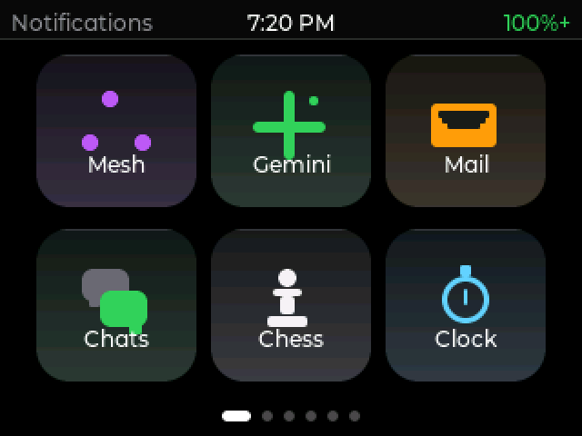
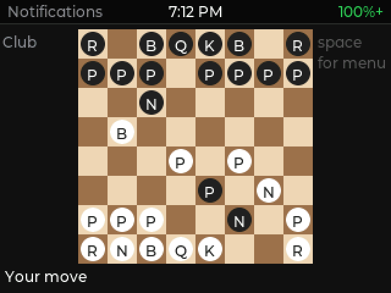
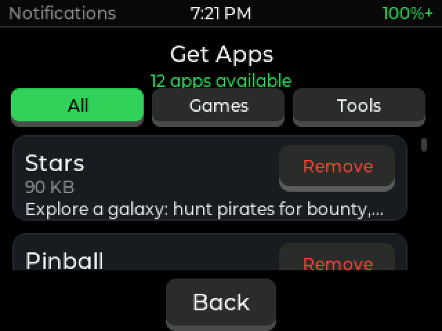
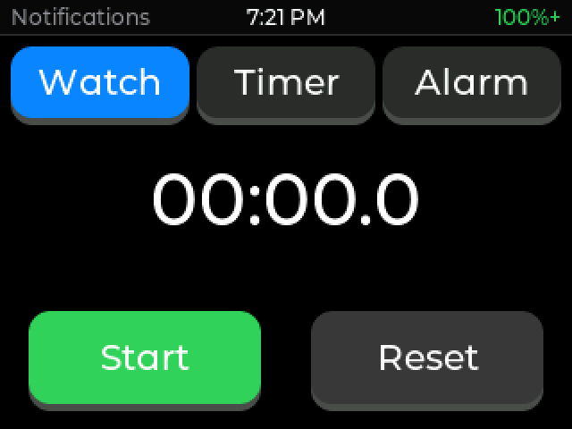

A custom launcher for the LilyGo T‑Deck
Built on Meshtastic · unofficial community buildThe T‑Deck is a pocket computer with a keyboard, a screen, GPS and a long‑range radio that works with no internet and no cell signal. T‑UI gives it a home screen of apps on top of Meshtastic, the popular off‑grid messaging system.




T‑UI is a friendly home‑screen “launcher” for the T‑Deck, built on top of the open‑source Meshtastic mesh‑radio firmware. Your T‑Deck still does everything Meshtastic does (off‑grid text messaging over long‑range radio, no cell service needed) — T‑UI just wraps it in a phone‑like grid of apps and adds a bunch of its own.
Everything is baked into the one file you flash above — all the apps below come with it.
1234.ftp://192.168.1.42 and a login (tdeck / 1234).tdeck, Password 1234, Port 21). Windows Explorer's
built‑in FTP is unreliable — FileZilla works best. Keep the Share screen open while transferring.Map images aren't included — they'd be enormous, and everyone wants a different part of the world. There are two ways to get them, and the first one needs nothing but the device itself.
Two map sources are built in, both free and happy to serve large downloads:
Pick your source on the download screen before you start.
Tap the magnifying glass on the map and start typing: towns, cities, lakes, ponds, rivers, peaks, passes, springs, campgrounds and more, nearest first. It works with no signal, because the names live on the SD card.
names folder at the top level, next to maps:
If you're outside the regions above — or you want a different style of map — the classic method still works, and T‑UI uses the same map format as Meshtastic, so any T‑Deck map guide applies.
.png squares organised
by zoom level./maps at the top level of the SD card,
in /maps/<zoom>/<x>/<y>.png form./maps folder), then copy that folder onto the SD card.Tip: search “Meshtastic T‑Deck offline map tiles” for the current downloader tools and step‑by‑step. Start with a smaller zoom range so it doesn't take forever.
A channel is a group you talk on. Everyone on it shares one key, so only people you've given it to can read the messages. Out of the box you're on LongFast — the public channel almost everyone uses. You can add private ones alongside it (a family group, say) without losing LongFast.
Tip: a channel with a blank name is LongFast. A channel actually named “LongFast” is a different channel that nobody else is on — so leave the name empty if you're trying to be on the public one.
Handy when you want to hand the same channel to several devices, or you don't want to pair a phone each time.
https://meshtastic.org/e/#…channel.txt
at the top level of the T‑Deck's SD card. Just the link, nothing else.Adding is additive — your existing channels stay. A channel whose name matches one you already have is updated rather than duplicated, and your region is never changed by a shared link.
You can write your own little apps and games for the T‑Deck in a simple language called Lua — just a text file, no programming tools needed. Even better: hand the app‑maker's guide to an AI assistant and describe the game you want.
main.lua, placed in /apps/<yourapp>/ on the
SD card. It shows up as a tile automatically.➡️ Full guide: Writing an app for the T‑Deck (Lua)
Free add‑on apps and games — a score keeper, unit converter, interval timer, pinball, a starfield. Install them straight from the T‑Deck over Wi‑Fi with the Get Apps tile, or download them here for the SD card. Anyone can write one and send it in.